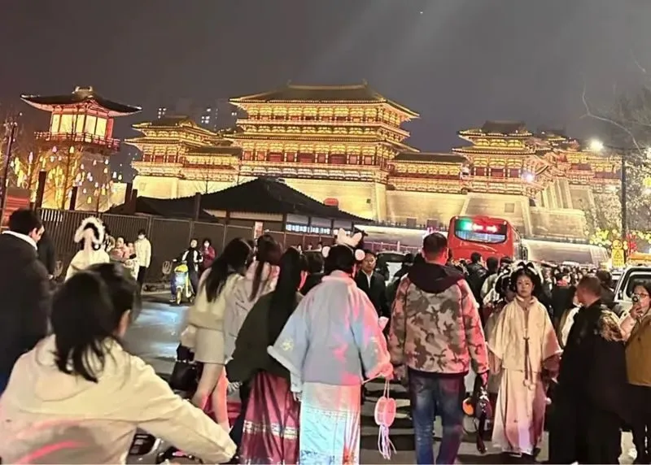
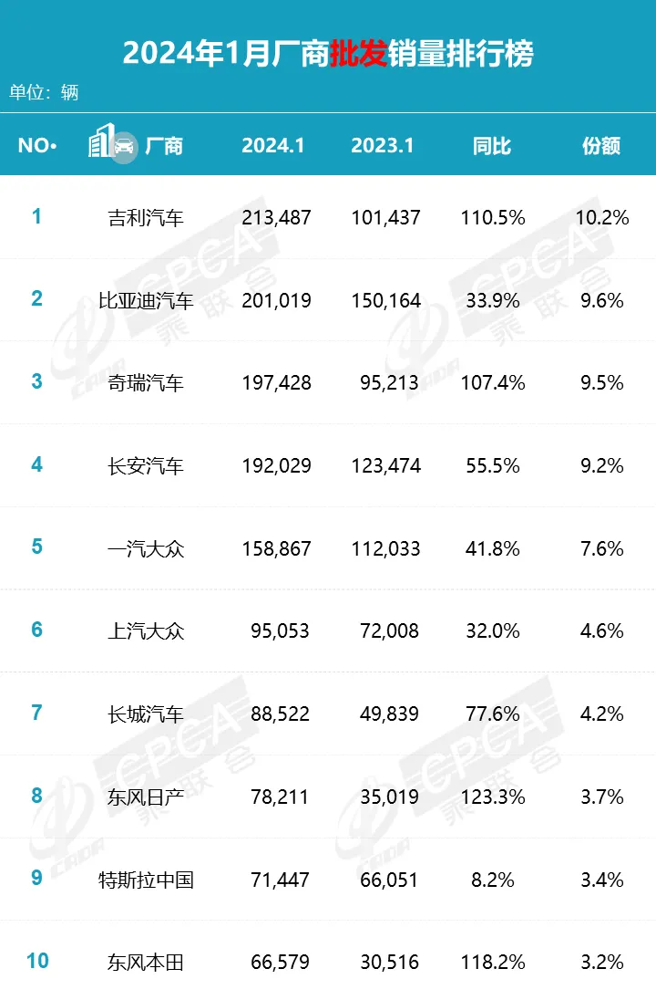
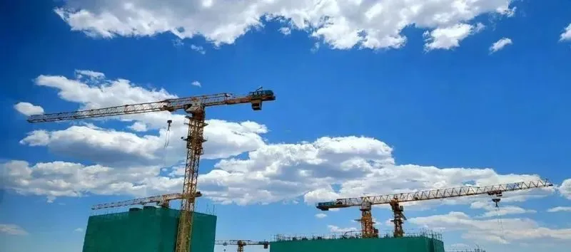
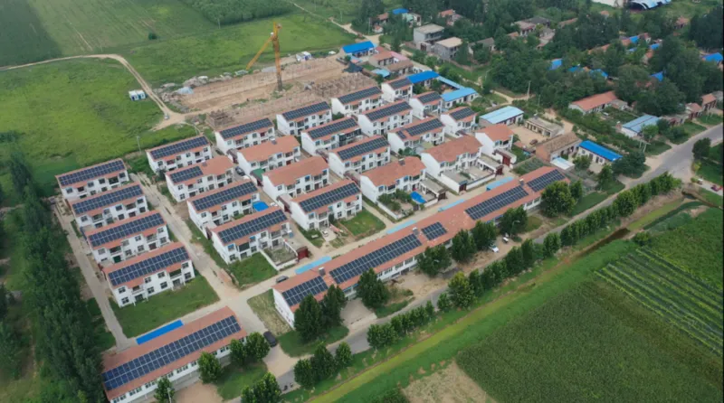

2024全国制造业发展“热辣滚烫”，而河南又在憋什么大招呢？
首页 / 2024全国制造业发展“热辣滚烫”，而河南又在憋什么大招呢？
新春佳节，消费结构再优化
春节的消费市场是观察经济社会活力和潜力的一个窗口。
农历腊月初八以来，全国网络零售额近8000亿元，比去年同期增长接近9%。旅游消费预订量增长约7倍。2023年经济增长达5.2%，而规模再攀高峰的背后，是消费结构快速升级优化。报道称，网上消费、新能源汽车消费、冰雪消费等多元化消费快速增长，消费市场活力蓬勃，对经济增长发挥了重要支撑作用。
河南省春节档电影票房突破5亿元，跃居全国第四位，累计接待游客5021.6万人次，同比增长48.8%；旅游收入297.7亿元，同比增长69.9%。

科技变革，引领创新新发展
国家统计局发布的数据显示，1月全国制造业PMI回升至49.2%，大型企业 PMI为50.4%；生产指数为51.3%；据数据统计，1月份国内狭义乘用车市场零售销量达203.5万辆，同比增长57.4%，比亚迪汽车201,019辆位居第二，同比

图片来源于AI汽车制造业
2024年河南预期目标为：经济增长5.5%，研发经费投入强2.1%规上工业增加值增长6.5%，固定资产投资增长7%，社会消费品零售总额增长7%，进出口平稳增长，单位生产总值能耗下降3%以上。

为实现预期目标，河南围绕建设制造业强省，展开实施制造业重点产业链高质量发展行动，壮大7个先进制造业集群28个重点产业链，向下梳理延伸N个专精特新细分领域，力争到2025年产业规模突破7万亿元，并聚力发展新质生产力，以科技创新推动产业创新，以颠覆性技术和前沿技术催生新产业、新模式、新动能。
项目开工，持续迸发新活力
十四五“规划纲要实施总体上实现”，17个方面重大战略任务总体进展顺利。2024年多地重大项目密集开工建设，项目多分布在新能源、汽车、人工智能以及基础设施建设等领域。

1月12日山东省发布重大项目名单，重大实施类项目共555个，重大准备类项目45个；
2月7日，河北省发展改革委发布了2024年省重点建设项目名单。项目共计639项，总投资1.38万亿元，年度预计完成投资2200亿元；
2月6日，山西省政府办公厅下发通知，发布2024年省级重点工程项目名单，共663项，其中包括产业转型296项、能源革命66项等；
1月2日，江苏省一季度计划开工亿元以上项目2710个，同比增加561个；
1月2日合肥至武汉高铁（安徽段）暨2024年安徽省第一批重大项目开工动员会举行，重大项目共460个，总投资4896.3亿元；
陕西省一季度计划开工省市级重点项目572个、总投资3143.45亿元、年度计划投资1031.39亿元；
福建，厦门63个重大项目集中开工，总投资1152亿元；
1月3日在长沙、岳阳、益阳等地，11个重大项目开工，总投资达872亿元
......
河南省发布2024年全省首批省重点建设项目，工业投资增长10%以上、技改投资增长20%以上，省重点项目完成投资1万亿元，基础设施投资增长10%。截至今年1月底，首批省重点项目中计划开工项目已开工68个、占年度目标的36.2%。
聚力打造7大先进制造业集群，培育壮大28个重点
开业链 ；开封兰考，总投资100亿元的兰考国家电投绿色能源项目办公楼，在一期项目建成后，年产值可达200亿元以上；
洛阳伊滨，中州时代新能源电池产业基地一期项目，生产区11栋单体建筑全部封顶，项目累计完成投资73.68亿元；
郑州航空港区，国际陆港西作业区轨道铺设已累计完成95%，2023年11月总投资20亿元，上汽集团郑州新能源电池工厂项目开工建设；
全省举行第十一期“三个一批”项目建设活动，项目规模与质量同行：签约项目751个，总投资6643亿元，其中10亿元以上项目244个，50亿元以上项目13个，100亿元以上项目3个。“签约一批”项目中，先进制造业、战略性新兴产业项目共685个，总投资5921.9亿元，占“签约一批”项目投资总额的近九成
.....
5月郑州工博会2024.05.07-10
2024年是新中国成立75周年，是实施“十四五”规划的关键一年，随着国家政策的不断提振和市场活力的全面提升，制造业行业也步入新的发展时期。

作为中西部工业品牌大展，第20届郑州工博会将于2024年5月7-10日盛大举办，将从展会内容、观众升级、配套活动等各维度展开全面升级，当前筹备工作高效推进，成果显著。以12大展馆、7万平方米的总规模，7万专业观众、20余场会议论坛、1场中部工业采购节等内容恢弘呈现。

发展新质生产力也离不开最新成果的展示，5月郑州工博会现场将集结国内外一线品牌展商，吸引马扎克、台湾崴立、山东威达、鹏睿智能、台湾大畏、华都精工、深圳硕方、通大数控、河南米斯特、邦德激光、龙雕激光、宏牛激光、华迈激光、东海机床、安徽重望、浙江中诺、汇川、台达、英威腾、西门子、信捷、零点、德克威尔、明纬、百灵、亚德克、库马克、广数、埃夫特、多元、克鲁斯、安川、SKF.....等知名品牌，展示最新科研成果和前沿工艺，提供细分行业的高效解决方案，真正助力企业形成新质生产力。
新起点，新未来！全力推动中国制造业高质量发展，2024郑州工博会将聚力启程龙年新篇章，推动展会实效再升级！